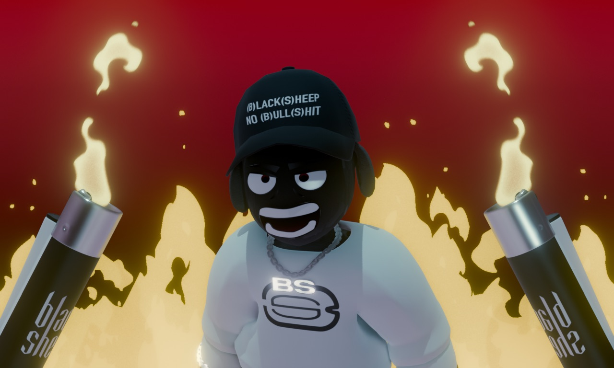
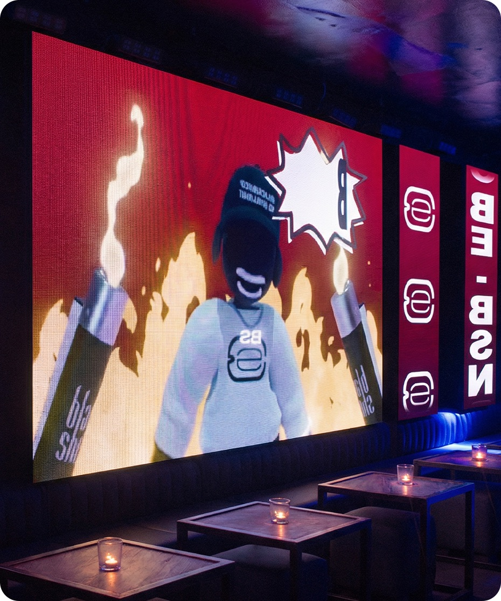
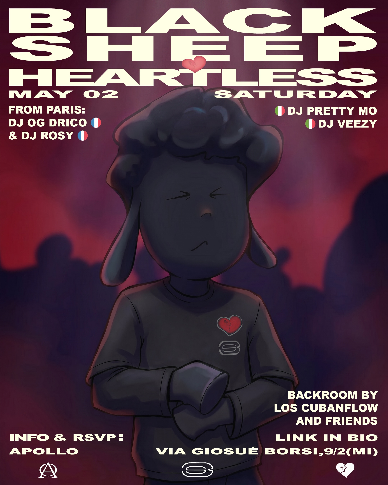
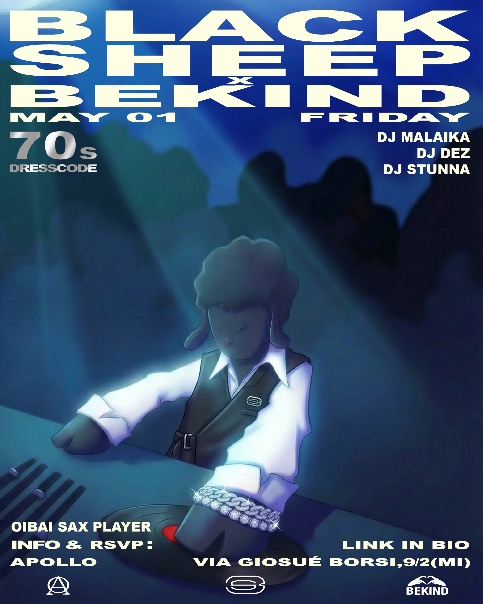
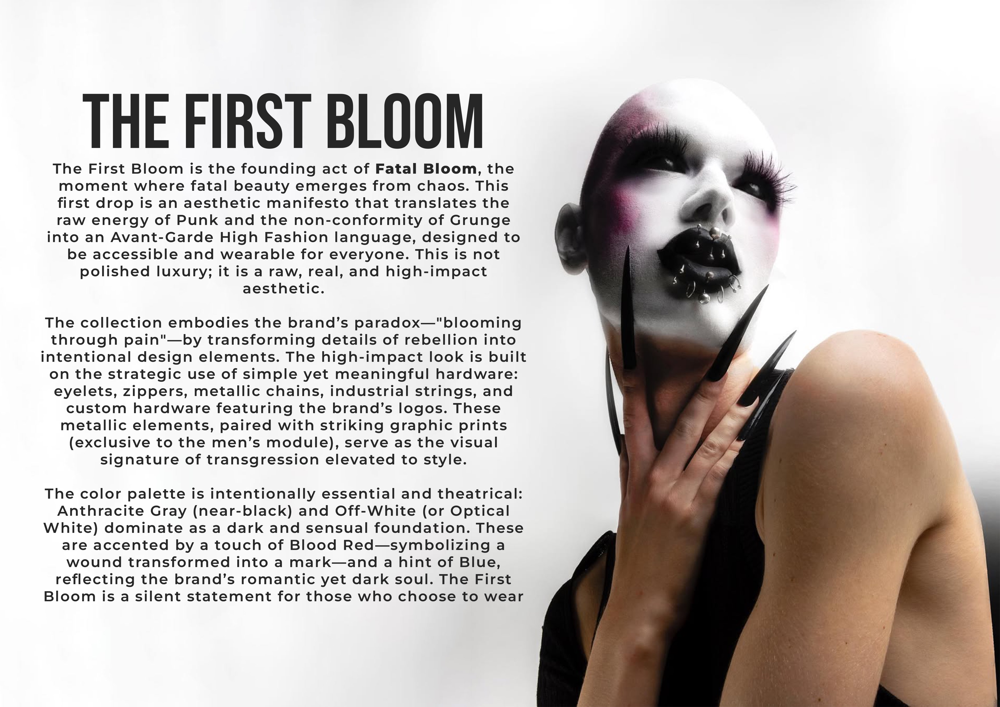
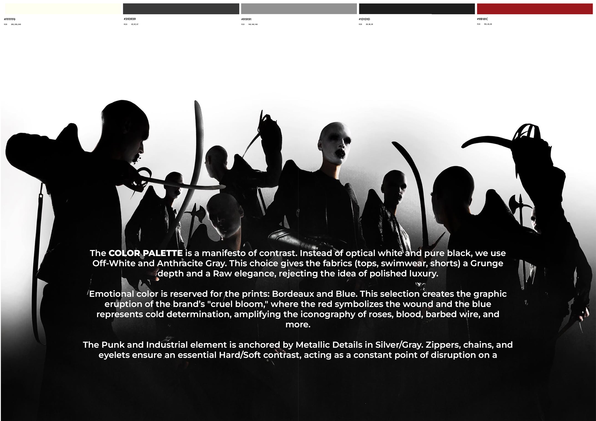
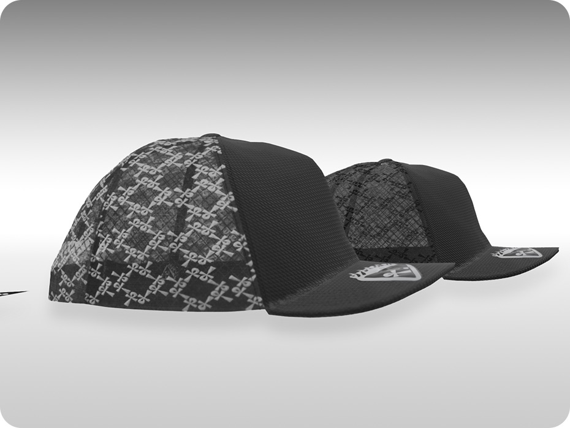
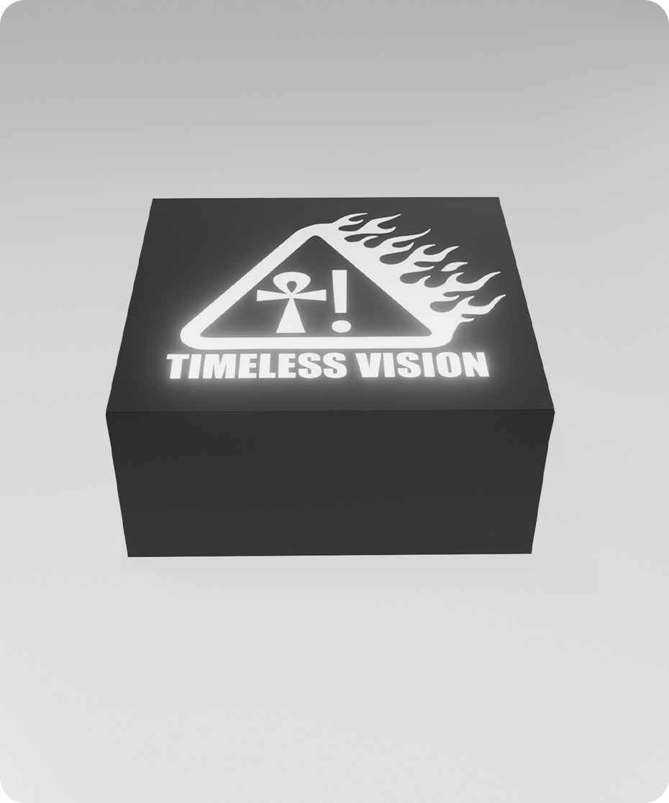

Skinny Spietato
Design & Visual Systems
Technical unit for 2D/3D prototyping and visual engineering.
Integrated production: physical printing and AI-driven asset generation.
Activation upon preventive evaluation.
BLACK SHEEP X 11CLUBROOM
The Black Sheep x 11Clubroom project operates within a nightlife context defined by strong urban and community identity, designed for clubbing environments where the visual experience is central. The primary visual communication element consists of immersive LED walls engineered to deliver spatial continuity and aesthetic coherence, transforming the venue into an integrated and recognizable visual system.


BLACK SHEEP X HEARTLESS X BEKIND X APOLLO
Black Sheep hosted a two-day collaborative event structure on May 1st and 2nd at Apollo Milano. The objective was to produce a coherent series of digital promotional assets capable of presenting the multi-format event with high visual clarity while maintaining the core structural recognition of the host brand.


FATAL BLOOM BY MANTIS
This project focuses on the development of the mini collection Fatal Bloom. The objective was to build a collection capable of generating multiple configurations through the physical interaction between garments while maintaining a coherent technical framework and an industrial visual language.


AEEZUS ANKH — TRUCKER HAT
Aeezus Ankh introduced a limited collection of five hats. The objective was to produce a series of digital assets capable of presenting the products with a high level of visual clarity and realism, highlighting material quality, design details, and stylistic identity across digital platforms.

